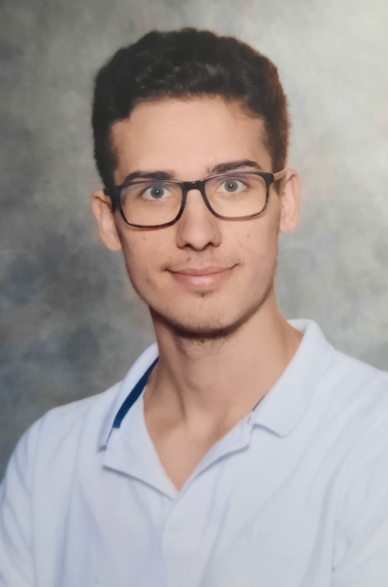

Langages
- Python
- C
- SQL
- HTML
- CSS
- LaTeX
- Arduino

Bienvenue
Je m'appelle Erwann Labit, j'ai 20 ans. Je suis un étudiant ingénieur au sein de l'ENSEEIHT à Toulouse. Je me suis spécialisé en électronique, énergie électrique et automatique. Je suis également un étudiant sous statut parcours sportif facilité (PSF) en course à pied, reconnu par le groupe Toulouse INP. Sur cette page web, vous trouverez mon parcours professionnel, mes compétences, mes projets ainsi que mes centres d'intérêts.
Cadre du projet : TIPE en CPGE, en binôme
Cycle ingénieur, filière électronique, énergie électrique et automatique (3EA).
Lycée Déodat de Séverac, Toulouse.
Lycée Saint Joseph La Salle Toulouse, Mention très bien.
LAAS-CNRS, Toulouse
Domaine : Le mouvement des systèmes anthropomorphes
Juillet/Août 2027 · Stage Ouvrier
Ce projet de mobilité s'intègre dans le cadre du stage ouvrier en fin de première année à l'ENSEEIHT.
Derrière ce projet, mon objectif est de perfectionner ma maîtrise du Japonais en l'utilisant dans un contexte réel, au quotidien comme en milieu professionnel. Je souhaite aussi continuer à approfondir mes connaissances sur cette culture.
2028 · ERASMUS
Je réfléchis à effectuer un semestre à l'étranger dans le cadre du programme Erasmus. Mon souhait serait de l'effectuer dans un pays scandinave, dont la culture m'intéresse et qui compte parmi les plus avancés en matière de transition écologique. Cette avance se traduit sur le plan scientifique et technique, notamment dans les énergies renouvelables.
A réfléchir
Le Canada est également une destination qui m'intéresse pour effectuer un stage ou poursuivre mes études à l'étranger.
Éditions 2024, 2025 et 2026
J'ai participé à diverses courses organisées par l'ONCOPOLE au profit de la ligue contre le cancer.
Oct 2026
J'ai participé à une course caritative organisée par les écoles du groupes Toulouse INP au profit de la ligue contre le cancer.
Sept 2026
Au début de ma première année à l'ENSEEIHT, certains 2e années ont organisé une "Clean Walk" pour les 1ères années. L'objectif est de marcher à travers la ville est de ramasser tous les déchets dans les rues.
Sept 2026
J'ai participé à une activité sur la fresque des frontières planétaires avec d'autres élèves de l'ENSEEIHT. Nous avions des cartes imagées sur la dégradation de l'environnement. Notre objectif était de distinguer les causes, les conséquences et le type de dégradation de l'environnement. Cette activité nous a permis de mieux comprendre les différents problèmes climatiques.
Sept 2026
J'ai pu assister à la pièce de théâtre interactive "Le procès de King Kong" décrivant 3 exemples de violences sexistes et sexuelles (VSS) et leurs conséquences.
Oct 2026
J'ai participé à la journée dédiée au festival "Futur Proche" organisé par les universités de Toulouse ainsi que les écoles partenaires. Les 2 conférences auxquelles j'ai pu participer : "Penser les effets de l'IA générative" et "Repenser la technique, ses finalités et le rôle de l'ingénieur" ont été très constructives.
Du 800 m au semi-marathon · piste, route et trail
Je pratique la course à pied depuis 13 ans dont 11 ans en club, et possède également depuis cette année la licence universitaire FFSU. Je possède actuellement un niveau régional. Grâce à cela, le groupe Toulouse INP m'a accepté le statut étudiant au parcours sportif facilité (PSF). La course à pied m'a permis de développer ma régularité, ma persévérance ainsi que ma gestion du stress.
Records personnels
J'ai pratiqué l'escalade en association sportive durant 2 ans au lycée. L'escalade m'a permis de développer une réflexion calme en plein effort.
J'ai pratiqué le tennis de table en club pendant 3 ans avant de pratiquer la course à pied. Il s'agit d'un sport que j'apprécie toujours autant maintenant. Le tennis de table m'a permis d'améliorer ma rigueur, ma technique et ma gestion du stress face à d'autres adversaires.
Ma curiosité pour la musique m'a poussé à pratiquer le piano pendant 5 ans. Ces années m'ont permis de développer la rigueur dans l'apprentissage : il faut travailler régulièrement, décomposer un morceau difficile en petites étapes et accepter de répéter pour progresser.
Les langues et cultures étrangères m'intriguent. J'aime prendre du temps pour apprendre de nouveaux mots dans diverses langues. Chaque langue offre aussi une façon différente de voir le monde, et c'est ce qui me motive à continuer à en découvrir.
Réussir à échanger avec des personnes parlant une autre langue est très gratifiant.
Valorant
Dans mon temps libre, j'aime également jouer à Valorant. Il s'agit d'un jeu de tir à la première personne (FPS) où deux équipes de 5 joueurs s'affrontent. Dans ce jeu, il est important de savoir communiquer clairement en équipe ainsi que de pouvoir prendre rapidement des décisions que se soit individuellement ou en équipe pour pouvoir gagner la partie. C'est un jeu que je trouve très intéressant car on peut toujours apprendre de nouvelle choses, et l'étude des parties passées permet d'effectuer des bilans sur ses points forts et points faibles tout en réfléchissant à de nouvelles stratégies.
Si vous avez une question, un projet ou une proposition de stage, n'hésitez pas à m'écrire.